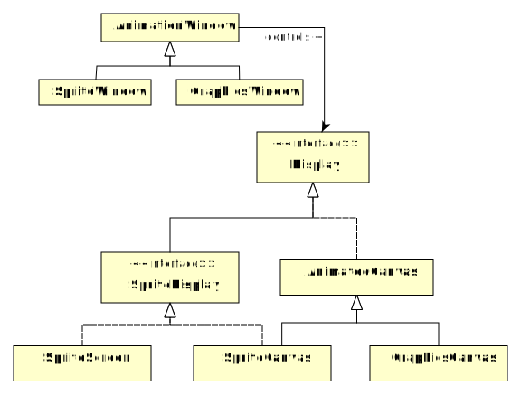

The internal class names can get a little confusing. Generally:
SpriteScreen shows a tile-based sprite animation in
text mode.
SpriteCanvas shows a tile-based sprite animation in
graphics mode.
GraphicsCanvas shows general graphics-based
animation (not limited to tiles). It goes with GraphicsWindow.
This is illustrated in the following diagram:
